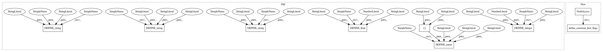

5175b7e69c74b13405afa26761d79a21ff1621ef,official/bert/run_pretraining.py,,,#,36
Before Change
flags.DEFINE_string("input_files", None,
"File path to retrieve training data for pre-training.")
flags.DEFINE_string("bert_config_file", None,
"Bert configuration file to define core bert layers.")
flags.DEFINE_string(
"model_dir", None,
("The directory where the model weights and training/evaluation summaries "
"are stored. If not specified, save to /tmp/bert20/."))
flags.DEFINE_string("tpu", "", "TPU address to connect to.")
flags.DEFINE_enum(
"strategy_type", "mirror", ["tpu", "mirror"],
"Distribution Strategy type to use for training. `tpu` uses "
"TPUStrategy for running on TPUs, `mirror` uses GPUs with "
"single host.")
// Model training specific flags.
flags.DEFINE_integer(
"max_seq_length", 128,
"The maximum total input sequence length after WordPiece tokenization. "
"Sequences longer than this will be truncated, and sequences shorter "
"than this will be padded.")
flags.DEFINE_integer("max_predictions_per_seq", 20,
"Maximum predictions per sequence_output.")
flags.DEFINE_integer("train_batch_size", 32, "Total batch size for training.")
flags.DEFINE_integer("num_train_epochs", 3,
"Total number of training epochs to perform.")
flags.DEFINE_integer("num_steps_per_epoch", 1000,
"Total number of training steps to run per epoch.")
flags.DEFINE_float("learning_rate", 5e-5, "The initial learning rate for Adam.")
flags.DEFINE_float("warmup_steps", 10000,
"Warmup steps for Adam weight decay optimizer.")
FLAGS = flags.FLAGS
After Change
flags.DEFINE_float("warmup_steps", 10000,
"Warmup steps for Adam weight decay optimizer.")
common_flags.define_common_bert_flags()
FLAGS = flags.FLAGS
In pattern: SUPERPATTERN
Frequency: 3
Non-data size: 9
Instances
Project Name: tensorflow/models
Commit Name: 5175b7e69c74b13405afa26761d79a21ff1621ef
Time: 2019-07-02
Author: saberkun@users.noreply.github.com
File Name: official/bert/run_pretraining.py
Class Name:
Method Name:
Project Name: tensorflow/models
Commit Name: 5175b7e69c74b13405afa26761d79a21ff1621ef
Time: 2019-07-02
Author: saberkun@users.noreply.github.com
File Name: official/bert/run_pretraining.py
Class Name:
Method Name:
Project Name: tensorflow/models
Commit Name: 5175b7e69c74b13405afa26761d79a21ff1621ef
Time: 2019-07-02
Author: saberkun@users.noreply.github.com
File Name: official/bert/run_squad.py
Class Name:
Method Name:
Project Name: tensorflow/models
Commit Name: 5175b7e69c74b13405afa26761d79a21ff1621ef
Time: 2019-07-02
Author: saberkun@users.noreply.github.com
File Name: official/bert/run_classifier.py
Class Name:
Method Name: